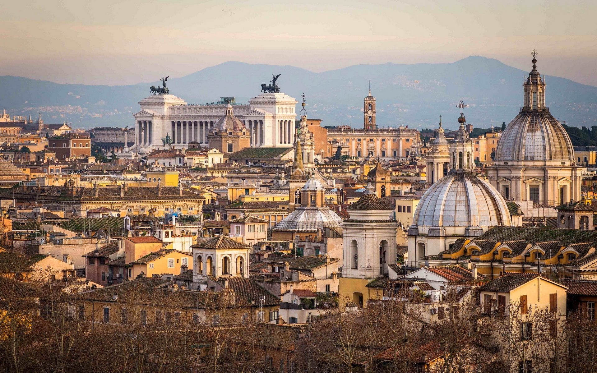
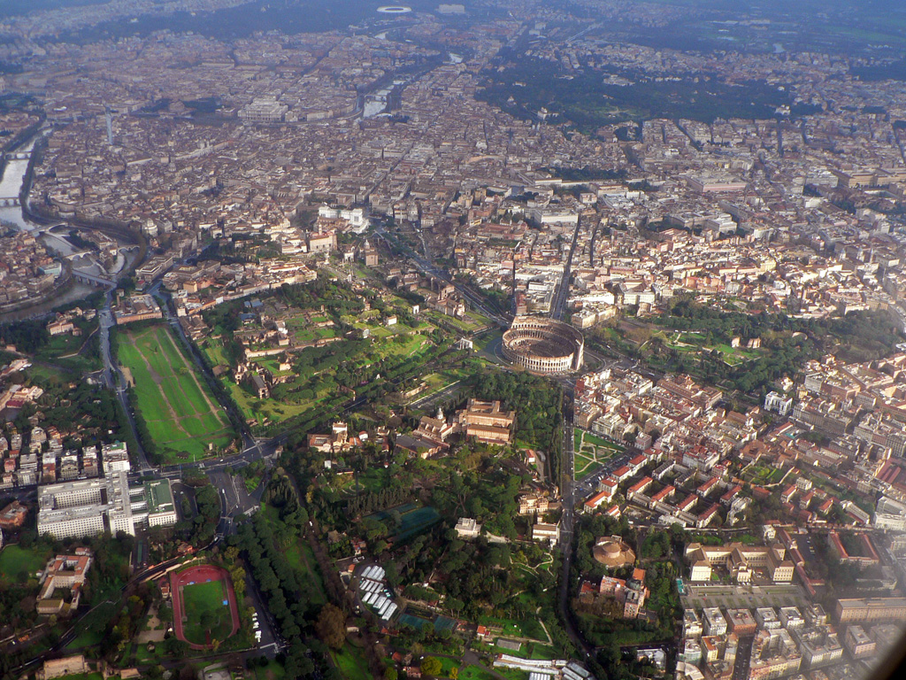

Roma, la capital de Italia, es una extensa ciudad cosmopolita que tiene a la vista casi 3,000 años de arte, arquitectura y cultura de influencia mundial. Las ruinas antiguas como las del Foro y el Coliseo evocan el poder del antiguo Imperio Romano. La ciudad del Vaticano, sede central de la Iglesia católica romana, cuenta con la Basílica de San Pedro y los Museos del Vaticano, que albergan obras maestras como los frescos de la Capilla Sixtina de Miguel Ángel.
Es la ciudad con la más alta concentración de bienes históricos y arquitectónicos del mundo; su centro histórico delimitado por el perímetro que marcan las murallas aurelianas, superposición de huellas de tres milenios, es la máxima expresión del patrimonio histórico, artístico y cultural del mundo occidental.5 En 1980, junto a las propiedades extraterritoriales de la Santa Sede que se encuentran en la ciudad y la basílica de San Pablo Extramuros, fue incluida en la lista del Patrimonio de la Humanidad de la Unesco.
Roma es el corazón geográfico de la religión católica, ciudad santa del catolicismo y destino de peregrinación (vías romeas) y también la única ciudad del mundo que tiene en su interior una entidad estatal autónoma: el enclave de la Ciudad del Vaticano, que se encuentra bajo el poder temporal del papa.8 Por tal motivo se le ha conocido también como la capital de dos Estados.
El territorio del municipio de Roma es amplio, habiendo absorbido áreas que habían estado abandonadas por siglos, en su mayoría plagadas de paludismo y poco aptas para la agricultura, áreas no pertenecientes a ningún municipio: se extiende sobre una superficie de 1285,31 km² y es el territorio ocupado por la ciudad más grande de Italia.
Roma se presenta como el resultado del continuo sobreponerse de testimonios arquitectónicos y urbanísticos de diversos siglos, en una compenetración única y sugestiva que muestra la compleja relación que la ciudad ha sostenido con su pasado, en un alternarse de desarrollos caóticos, periodos de decadencia, renacimientos y tentativas, en la edad contemporánea, de modernización del tejido urbano. Una gran cantidad de los bienes culturales del mundo se encuentra en Roma.
Los edificios religiosos de Roma constituyen una parte fundamental del patrimonio monumental de la ciudad capitolina: estos son el símbolo de la importancia cultural, social y artística del componente religioso durante todos los periodos de la historia romana.
En Roma hay varios centenares de iglesias cristianas y su historia se entrelaza con la historia religiosa, social y artística de la ciudad. La catedral es la basílica de San Giovanni in Laterano, una de las cuatro basílicas patriarcales o papales junto con la basílica de San Pedro en la Ciudad del Vaticano, la Basílica de San Pablo Extramuros y la Basílica de Santa María la Mayor.
Los edificios civiles de Roma consisten en varios centenares de edificios y otros monumentos que acompañan a la historia de la ciudad durante sus 28 siglos: de la 'arx Capitolina y las domus (casas) de la antigua Roma a los edificios señoriales de la Edad Media, desde las lujosas villas de la Roma pontificia a las edificaciones modernas que caracterizan la zona EUR y los barrios más recientes.
Roma es la única capital europea que ha conservado casi completamente el circuito de sus murallas, que pueden dividirse en seis sistemas defensivos distintos (las murallas romuleanas, las murallas servianas, las murallas aurelianas, las murallas leoninas, las murallas Vaticanas y las murallas gianicolenses).
Las principales plazas de Roma, nacidas durante el Renacimiento o el periodo barroco, tienden a dar testimonio de la capacidad creativa de un ideal de vida armonioso entre la exaltación humanística y las concesiones sobrenaturales. Entre las más célebres plazas romanas, se encuentran la plaza de España, la plaza Navona, la Piazza del Popolo, la plaza de la República, la plaza Venezia, la plaza Colonna, la plaza Farnese, el largo di Torre Argentina, el Campo de' Fiori y la Plaza de San Pedro.
Por su abundancia de sitios y restos arqueológicos, Roma es un verdadero «museo al aire libre». La cuna de la historia de Roma es el Palatino, debajo del cual se encuentran el Foro Romano, los Foros imperiales y el Mercado de Trajano, los centros de la vida política, económica, religiosa y social del mundo antiguo. A poca distancia se encuentra el Coliseo, el monumento que sirve de símbolo a la Antigua Roma; sobre la cercana colina Oppio se encuentran los restos de la Domus Aurea, la «casa de oro» de Nerón.
Roma es una ciudad rica en tradiciones, mitos, leyendas, disfraces y folclore, ya desde la Antigüedad y a lo largo de toda la Edad Media, edad en la cual florecieron múltiples relatos populares, en los que la esfera religiosa se unía al mundo mágico, lo sagrado se combinaba con lo profano.